Mechanics
Een overzicht van de core mechanics in Starlight Forest
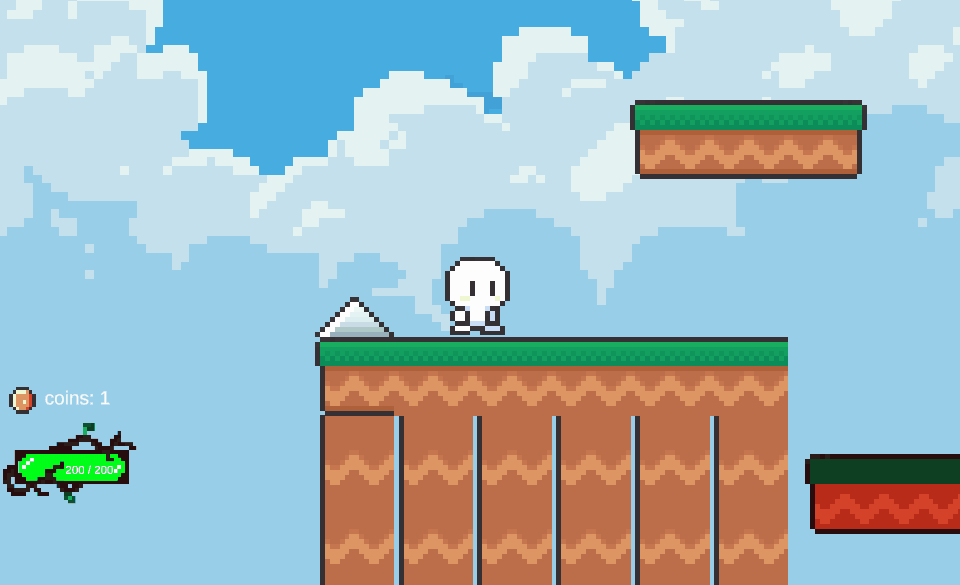
Movement System - Level 1
Voor level 1 heb ik een 2D movement systeem ontwikkeld met behulp van Rigidbody2D physics. De speler beweegt horizontaal via input en kan springen met een ground check gebaseerd op Physics2D.OverlapCircle. Daarnaast heb ik een double jump mechaniek toegevoegd via een extraJumpValue. Ik heb bewust gekozen voor een physics-based aanpak in plaats van transform-beweging, zodat botsingen en interacties stabiel en realistisch blijven. Alle belangrijke waarden zoals moveSpeed en jumpForce zijn instelbaar in de Inspector, zodat het systeem flexibel blijft.
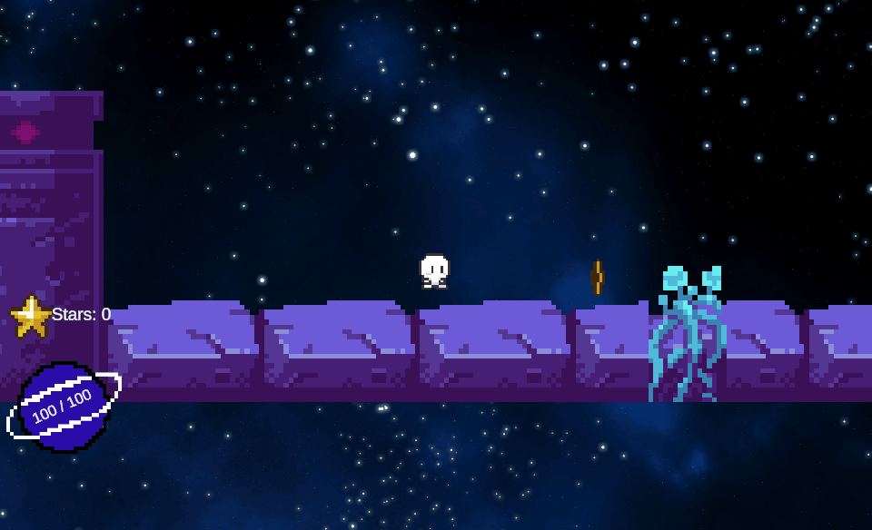
Movement System - Level 2
In het space-level heb ik hetzelfde movement systeem hergebruikt, maar aangepast voor een lichtere en zwevende ervaring. Door gravity en sprongwaarden veranderen ontstaat er een andere gameplay-feel zonder de controls te veranderen. Dit zorgt voor variatie in spelervaring terwijl de besturing consistent blijft voor de speler.
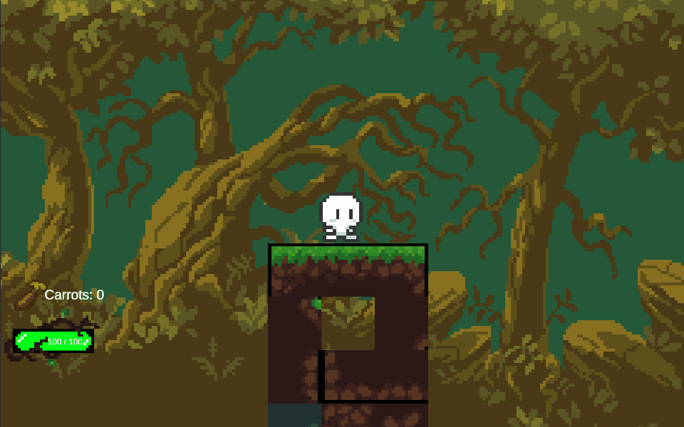
Movement System - Level 3
In het nature-level ligt de nadruk meer op precies springen en goed timen. Daarom heb ik de beweging iets aangepast zodat het nauwkeuriger aanvoelt. Ik heb wel dezelfde basis gebruikt als in de andere levels, zodat de besturing herkenbaar blijft en de code overzichtelijk blijft.
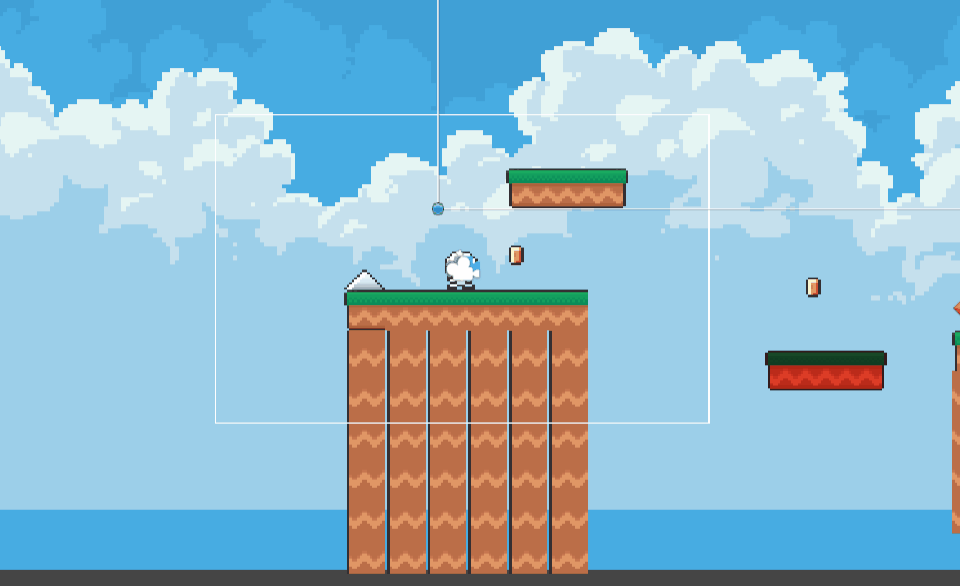
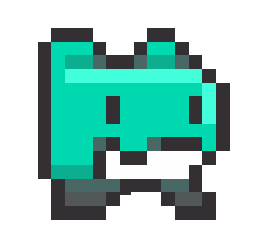
Enemy Behaviour - Level 1In level 1 heb ik de enemies ontworpen zowel als basisvijanden en basering op thema. Hierdoor wil ikde speler introduceren aan het spel. Hun beweging is eenvoudig en overzichtelijk gehouden, zodat de speler eerst kan wennen aan de gameplay. Voor hun navigatie heb ik gebruik gemaakt van lege GameObjects als waypoints. Tussen deze punten bewegen de enemies automatisch heen en weer. Hierdoor kan ik hun route eenvoudig aanpassen in Unity zonder wijzigingen in de code aan te brengen.

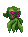
Enemy Behaviour - Level 2In het space-level zijn de enemies aangepast aan het thema van de ruimte. Zowel hun visuele uitstraling als hun plaatsing in het level sluiten aan bij de omgeving. Ook hier heb ik lege GameObjects gebruikt om hun bewegingsroute te bepalen. Door deze aanpak blijft het systeem flexibel en eenvoudig herbruikbaar voor andere levels.
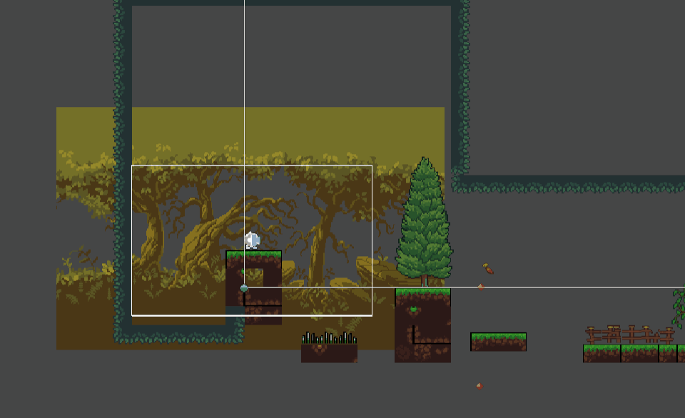
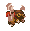
Enemy Behaviour - Level 3In het nature-level zijn de enemies strategischer geplaatst, zodat timing en precisie belangrijker worden. Hun bewegingspatroon is afgestemd op de platform-elementen in dit level. Net als in de andere levels gebruik ik lege GameObjects om hun navigatie vast te leggen. Dit zorgt voor een overzichtelijke en schaalbare structuur binnen mijn project
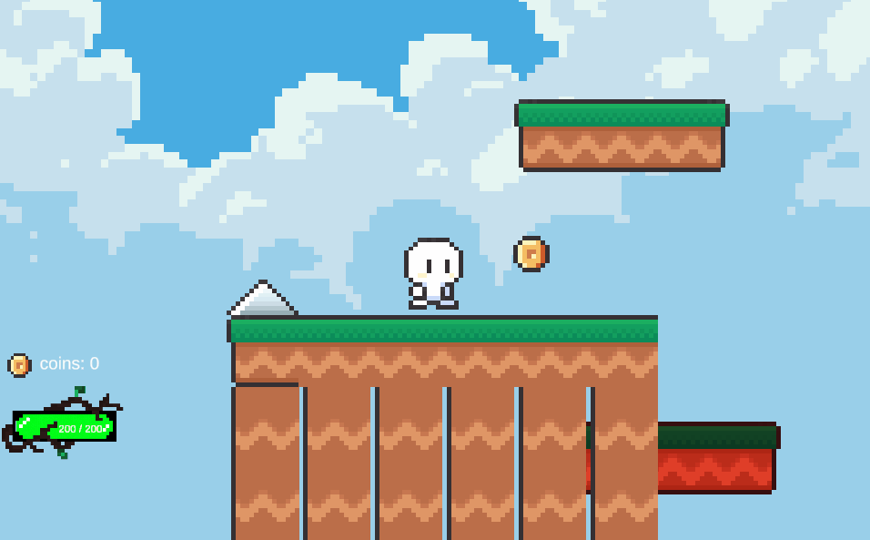
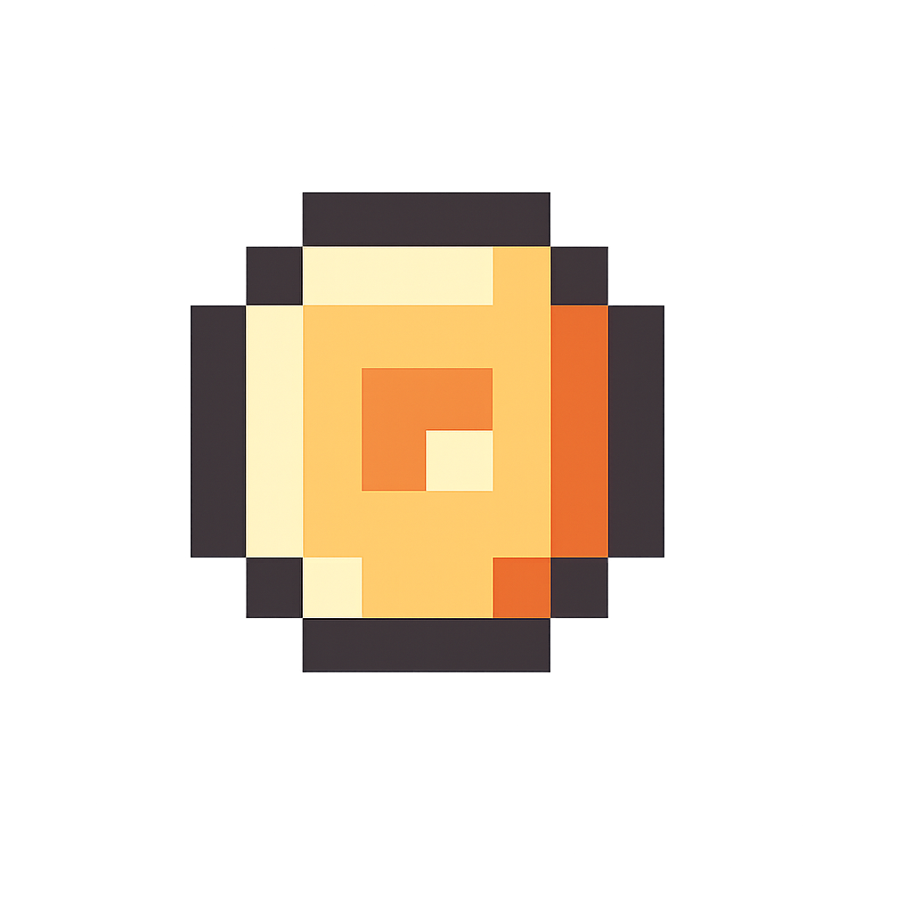
Coins - Level 1In level 1 heb ik een coin-systeem toegevoegd waarbij de speler objecten kan verzamelen tijdens het spelen. Wanneer een coin wordt geraakt, verdwijnt deze uit het level en wordt de score direct bijgewerkt in de canvas. Ik heb hiervoor gekozen omdat het de speler een extra doel geeft en de gameplay actiever maakt. Daarnaast heb ik normale coins icoon gebruikt die passen bij het thema van het level, zodat ze visueel aantrekkelijk zijn en goed
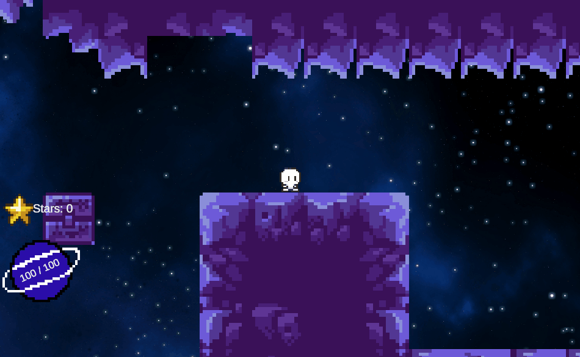
Coins - Level 2
In level 2 heb ik hetzelfde coin-systeem hergebruikt, maar toegepast binnen een andere omgeving. Hierdoor blijft de mechanic herkenbaar voor de speler, terwijl het level zelf toch een andere uitstraling en ervaring biedt.
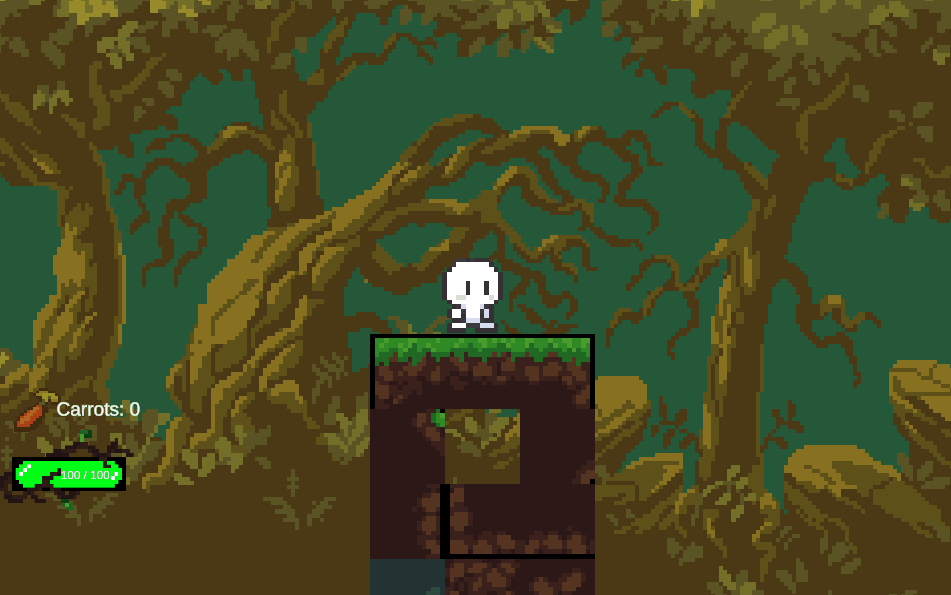
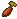
Coins - Level 3In level 3 heb ik het coin-systeem opnieuw gebruikt als onderdeel van de gameplay. Door deze mechanic in meerdere levels terug te laten komen, ontstaat er herkenbaarheid in het spel en begrijpt de speler sneller wat het doel is.
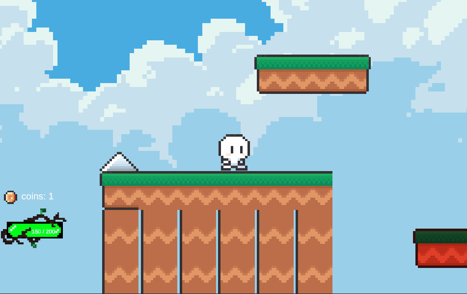
Healthbar - Level 1
In level 1 heb ik een healthbar toegevoegd zodat de speler direct kan zien hoeveel levens er nog over zijn. Ik heb hiervoor gekozen omdat dit duidelijke inzicht geeft tijdens het spelen en het makkelijker maakt om schade en gevaar te begrijpen.
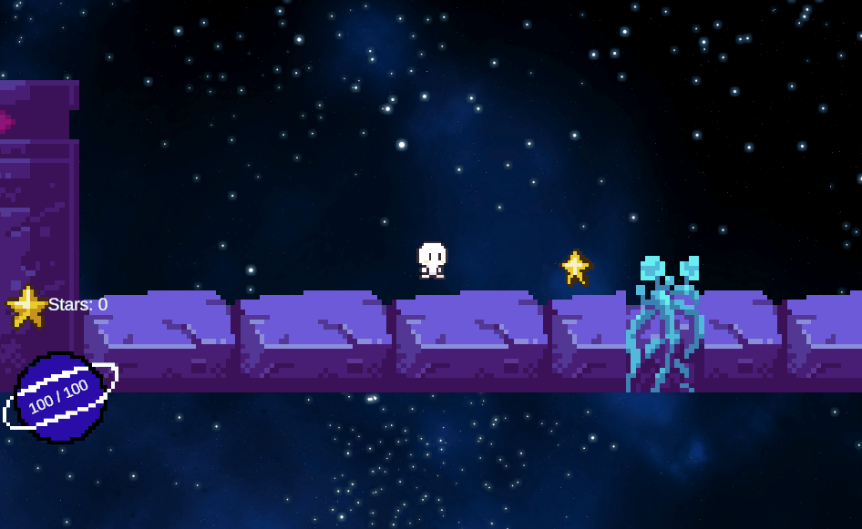
Healthbar - Level 2
In level 2 blijft de healthbar hetzelfde werken, maar is deze aangepast aan het thema van het level. Hierdoor past hij beter bij de omgeving en blijft het voor de speler duidelijk, ook als de moeilijkheid verandert.
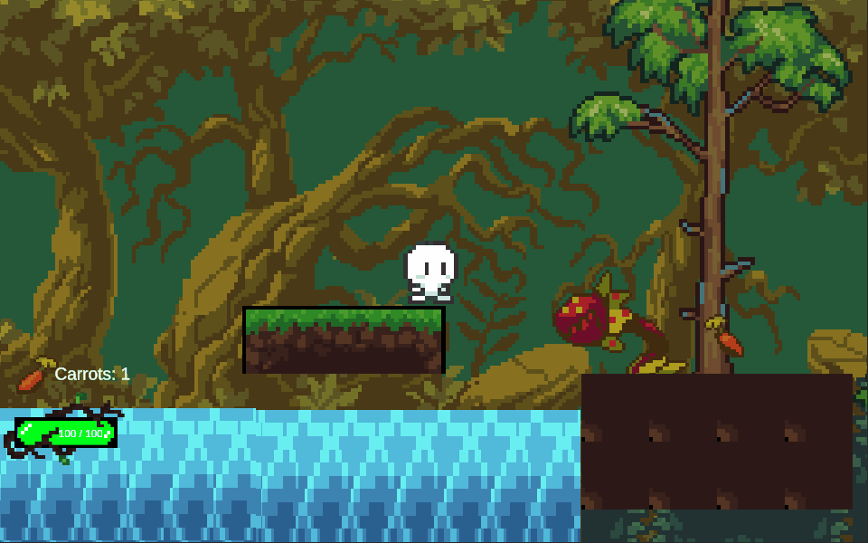
Healthbar - Level 3
In level 3 helpt de healthbar bij de spannendere gameplay, waarbij timing en overleven belangrijker zijn. De vormgeving is aangepast aan het thema van het level, waardoor het goed past bij de omgeving en de speler overzicht houdt tijdens het spelen.